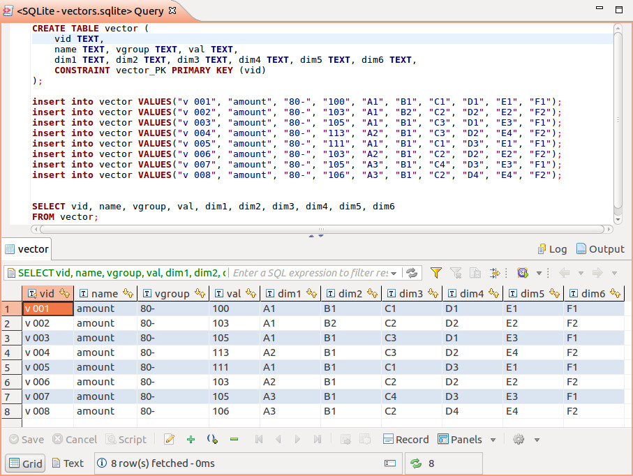

About Anclient¶
Anclient is the client side API for semantic-jserv service like JSample, which including:
- anclient.java,
the java client.
- anclient.js,
the low level js client API for accessing service at jerver.sample.
It’s for other presentation tier extension, such as HandsonTable, which is also been used in commercial project. All the clients are tested together with jserv.sample (All? Not True) and can be configured to a different jserv service.
- anclient.js.easui,
the JQuery EasyUI API lib that take care of communicating with semantic-*, binding UI widgets, based on anclient.js.
The EasyUI version is implemented as a basic enterprise webapp’s client, including a role based function privilege management and a cheap workflow extension. It’s a good starting point for a commercial webapp.
- anclient.cs,
the planned c# client.
- anclient.js.vue,
the planned vue components can communicate with sematic-*, based on anclient.js.
The sample project’s client side located in the anclient/test folder.
JS Quick Start¶
Start with the basic API¶
- Deploy a web application of Semantic-jserv
Say, jsample.
- Install Anclient.
It’s a npm package:
npm install --save-dev anclient
- Create a client
The client is based upon the plain js API.
// initialize a client of jsample
var $J = new $J();
$J.init(null, "http://127.0.0.1:8080/jsample");
var ssClient;
function login() {
$J.login(
"admin", // user name
"", // password (won't sent on line - already set at server)
// callback parameter is a session client initialized with session token
// client.ssInf has session Id, token & user information got from server
function(client){
ssClient = client;
console.log(ssClient.ssInf);
query();
});
}
/** Create a query request and post back to server. */
function query(conn) {
var req = ssClient.query(conn, "a_user", "u", {page: 0, size: 20});
req.body[0]
.expr("userName", "un").expr("userId", "uid").expr("roleName", "role")
.j("a_roles", "r", "u.roleId = r.roleId")
.whereCond("=", "u.userId", "'admin'");
$J.post(req,
// success callback. resp is a server message
function(resp) {
console.log(resp);
});
}
It’s doing 3 things:
- create a client of jsample
- login with the user’s login name and password
The session is managed by Semantic.jserv and Anclient together. Each user’s action will touch the time stamp at jserv’s session information. If user stop action for a time (configured at server side), the session will expired
- query the user’s basic information (role)
The query is a simple SQL example. It’s wrapped by upper widget binding layer to produce automatic data bindings.
Example: xvisual¶
Copy the released template project form the release section.
Anclient has multiple samples (in the future) sharing node’s modules. You can also install those like this
-+- examples.js
|--- xvisual
|--- sampel-TODO
To install dependencies:
cd examples.js
npm install --save-dev
If everything is OK, following dependencies should be installed:
babel-plugin-syntax-jsx babel-preset-env
jquery
d3 earcut oboe
anclient
x-visual@0.3.81
Note: This example depends on x-visual webgl1 branch, version 0.3.81.
Install webpack for the sample project:
cd xvisual
npm init
npm install webpack webpack-cli --save-dev
Then use webpack transpile the source:
npm run build
or:
webpack
There are many way to host the index.html page, e.g. start a python server in examples.js (index.html used 2 level parent path):
python3 -m http.server 8080
Then browse to:
http://localhost:8080/xvisual/bar-chart/
This example also will visiting the jserv-sample data service. See JSample quick start for how to setup it.
Comming with the jserv-sample project is a sqlit3 db file configured as connection id = “raw-vec”. The database has a table named vector, with some data:
The example/xvisual/app.js created the Anclient querying data from jseer-sample:
let req = this.ssClient.query("raw-vec", "vector", "v", {page: 0, size: 20});
req.body[0]
.expr("vid").expr("val", "amount")
.expr("dim1", "person").expr("dim2", "year").expr("dim3", "age")
.expr("dim4").expr("dim5").expr("dim6")
.whereCond("=", "vgroup", "'80-'");
this.an.post(req, function() {
bar.create(vectors);
});
The examples/xvisual/bars.js will creating cubes with size of vector values. The geometry parameters of bars are bound with vector data:
function create(vectors) {
for (let i = 0; i < vectors.length; i++) {
let v = vectors[i];
let y = (v.amount - 95) * 2;
let h = y / 2;
this.ecs.createEntity({
id: v.vid,
Obj3: { geom: xv.XComponent.Obj3Type.BOX,
box: [20, y, 20],
transform: [ {translate: [i * 30 - 90, h, 0]} ]
},
Visual: {vtype: xv.AssetType.mesh,
asset: v.person === 'A2' ?
undefined : '../../assets/tex/rgb2x2.png'
}
});
}
return this;
}
The final result should like this (of which two of the bars using a default texture generated by x-visual):